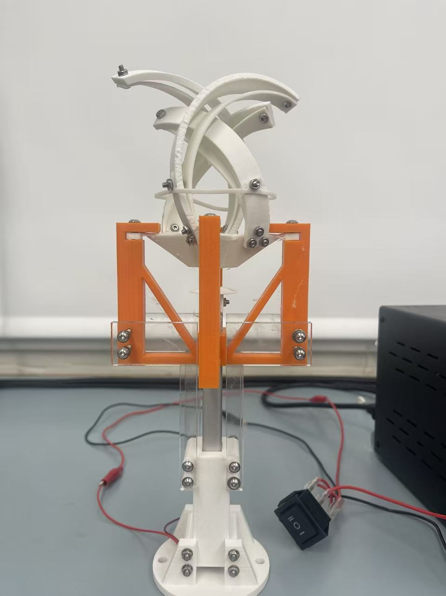
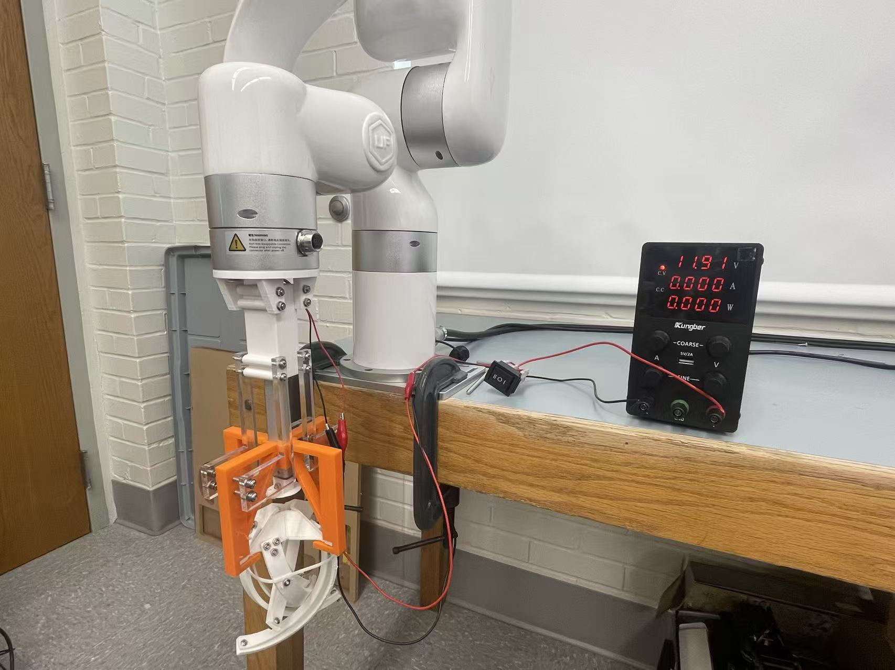
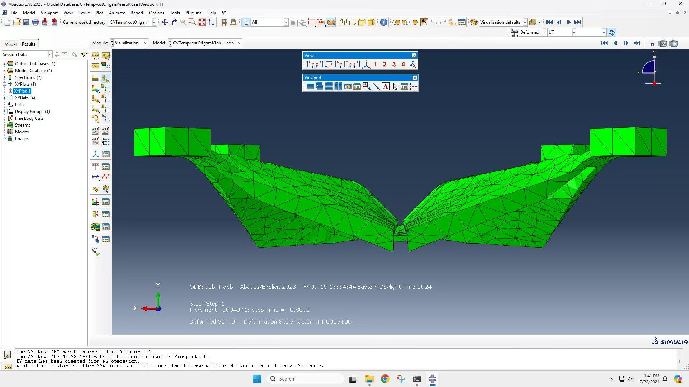

My role
I designed the base and fingers in SolidWorks, fabricated prototypes, evaluated base deformation in Abaqus, and integrated the gripper with a UFactory robotic arm.
Engineering approach
I varied wall thickness, fold geometry, width, and height to investigate mechanical behavior. Abaqus analysis focused on the base component. Physical experiments evaluated component positioning and grasp behavior, followed by robot-mounted trials with delicate produce including peaches.
Outcome
The project produced a fabricated gripper and robot-integrated prototype for grasp testing. I presented the research at undergraduate research events, including the Susquehanna Valley and Kalman symposia.


